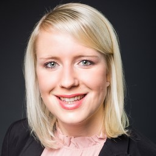
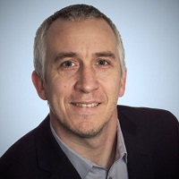
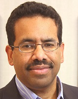
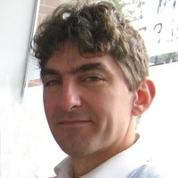
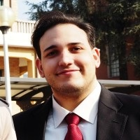
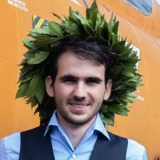

Capella Days regularly brings together the community of Capella and Arcadia:
Capella Days is your opportunity to learn from Capella ecosystem members! Benefit from the experience of industrial adopters who have sucessfully deployed an MBSE approach with Arcadia and Capella on their projects.
See all the editions.
Capella Days 2022 is organized by Obeo and Thales.
| Time | Session | Speakers |
|---|---|---|
| 3:30 pm CET | Welcome and Introduction | |
| 3:35 pm CET | A global engineering process based on MBSE to master complexity | Guillaume Journaux (Thales Defense Mission Systems) Karine Pellen (Thales Defense Mission Systems) |
| 4:25 pm CET | A method for quantitative evaluation of functional chains supported by a Capella add-on | Joost Dierkse (Thermo Fisher Scientific) Alexandr Vasenev (ESI-TNO) |
| 5:15 pm CET | Expand MBSE into Model-based Production Engineering (MBPE) to realize a Lego Manufacturing System | Susan Faust (Siemens Digital Industries Software) Chantal Sinnwell (Siemens Digital Industries Software) |
| 6:05 pm CET | Closing |
| Time | Session | Speakers |
|---|---|---|
| 3:30 pm CET | Welcome and Introduction | |
| 3:35 pm CET | How We Use Capella for Collaborative Design in COMAC | Xinyi Tang (COMAC) Renfei Xu (PGM) |
| 4:25 pm CET | Stairway to heaven: Climbing the very first steps | Stéphane Bonnet (Thales Avionic Systems) |
| 5:15 pm CET | CILAS feedback about Capella use | Julien Mansion (CILAS - ArianeGroup) |
| 6:05 pm CET | Closing |
| Time | Session | Speakers |
|---|---|---|
| 3:30 pm CET | Welcome and Introduction | |
| 3:35 pm CET | Interface Control Document Generation and Linkage to PLM EBOM | Michael Ali (Saratech) |
| 4:25 pm CET | Closing the gap between traditional engineering and digital-native engineering at Naval Group | Guillaume Leleu (Naval Group) Emmanuel de Château-Thierry (Naval Group) |
| 5:15 pm CET | Interplanetary Space Mission as a reverse-engineering background for the Capella environment | Emanuele Tomassi (Politecnico di Milano) Davide Bellicoso (Politecnico di Milano) Riccardo Rambaldi (Politecnico di Milano) |
| 6:05 pm CET | Closing |
TUESDAY 15th of NOVEMBER | 3:35 pm CET
Project Challenges
Project engineering process based on MBSE
Feed Forward
 |
Guillaume Journaux (Thales Defense Mission Systems)Over the past 10 years, his activities have oscillated between engineering practice, engineering management and engineering coaching at Thales. The processes that he has been able to deploy and practice on different programs are centered on a Capella model, taking particular care to link this model to other engineering data (textual requirements, tests, etc.) in order to ensure consistency and mastery of the whole. Coming from the software world, he also attaches great importance to the system to software transition (generation of interface and/or architecture code, generation of specifications, incrementality of the process, etc.). |
 |
Karine Pellen (Thales Defense Mission Systems)Karine Pellen is a system engineer working on complex collaborative systems in Thales. In her job, she tries to get users needs and formalize them into consistant system engineering data. She has been practicing Model Based System Engineering, in real life, on many different projects for more than 10 years. She uses Arcadia engineering approach, supported by Capella, strongly linked to other engineering data. With other convinced people, they coach people and help them change their engineering practices into more collaborative and formal ones. |
TUESDAY 15th of NOVEMBER | 4:25 pm CET
Development of high-tech systems is a complex task done by diverse specialists distributed across the globe. Reference architectures including a clear functional breakdowns can support them and support their decisions. This presentation proposes an approach to improve the development of advanced electron microscopes by using Capella as an authoritative source of information. To support design decisions, a Capella AddOn has been developed to obtain quantitative information, such as throughput numbers, for a particular workflow. First, we will illustrate how functional and system decompositions can be captured and serve as company-wide architecting assets to inform design decisions. Next, we will outline how simulating Capella models can bring valuable insights to modelers. During a demo, we’ll simulate Capella’s Functional chains using the open-source simulation tool POOSL (https://github.com/eclipse/poosl) , and visualize results using the freely available TRACE4CPS tool (https://www.eclipse.org/trace4cps/). Re-using functions from the reference architecture allows us reason about design aspects such as the relation between throughput and design choices about function allocation and parallelism.
 |
Joost Dierkse (Thermo Fisher Scientific)Joost Dierkse is System Architect at Thermo Fisher Scientific. |
 |
Alexandr Vasenev (ESI-TNO)Alexandr Vasenev is an experienced researcher with systems background, who focuses on developing and applying design methodologies. His interests include eliciting requirements, analyzing systems, and creating user-oriented solutions. His work concerns identifying practical methods to employ platforms and reference architectures in enterprise context. |
TUESDAY 15th of NOVEMBER | 5:15 pm CET
Mind Game: You want to build a LEGO Mindstorms Factory for Toy Cars and you are Head of Factory Planning. You identify that your manufacturing planning team and your product design team don’t collaborate with each other, because they work in silos and speak different languages. Their progress is too slow and the results are not synchronized.
Imagine: You succeed in merging your experts into one interdisciplinary team where everyone is collaboratively working together – already in the early stages of the engineering cycle. And imagine they start to speak the same language. Doubtless, you would speed up your engineering process. Furthermore, you would also reach a synchronized global solution for your manufacturing system and to be produced toy cars, building bridges inside your organization.
But how? This has been introduced by Dr.-Ing. C. Sinnwell in February 2020 in her PhD-thesis. There, she published the latest version of a methodology referred to as “MBPE – Model-Based Production Engineering”. The MBPE-methodology is a new approach for the conceptual design of manufacturing systems based on early product information supported by MBSE using UML.
The presentation will spotlight the MBPE-methodology, explaining how to use MBSE in the context of interdisciplinary factory and manufacturing planning. Also, it will be shown, how the methodology could be adapted to be realized with Eclipse Capella instead of any UML-modeling tool, illustrated by an example on how to conceptualize and model a LEGO Mindstorms production line for Toy Cars.
|  |
Susan Faust (Siemens Digital Industries Software)As a passionate ALM enthusiast, Susan Faust has been working as a PreSales Solution Consultant for the Polarion division at Siemens Digital Industry Software since 2019, advising and supporting companies on the topics related to software and system development. |
Chantal Sinnwell (Siemens Digital Industries Software)As a mechanical engineer with a PhD, Dr. Chantal Sinnwell has been working as a Solution Architect for the MBSE topic area at Siemens Digital Industry Software since 2019 and advises companies on the topics of MBSE and Model-based Production Engineering. She previously completed her doctorate on the question of how MBSE can be applied to production planning. |
WEDNESDAY 16th of NOVEMBER | 3:35 pm CET
COMAC is one of the leading suppliers of civil aircraft in the world. We will introduce how we use Capella in COMAC for collaborative design, including how to collaborate between overall design group and ATA design groups, and how to collaborate between different ATA design groups. We have done a serious of extension development based on the System to Subsystem Transition add-on, to support the business process. These extensions include the integration from subsystem models to system model, the refinement of functional exchanges, the synchronization of newly added functional exchanges, and so on.
 |
Xinyi Tang (COMAC)Xinyi Tang, who is a designer from the overall design group in COMAC, and also is a business analyst in the MBSE deployment project. |
 |
Renfei Xu (PGM)Renfei Xu is the Technical Director of MBSE from PGM. He has participated in many implementation projects of MBSE in areas like Engine Control, Avionics, Mechatronics, RADAR and so on. In recent years, he is dedicated to the promotion of Capella and ARCADIA in China. |
WEDNESDAY 16th of NOVEMBER | 4:25 pm CET
We MBSE enthusiasts love to imagine or witness sophisticated model-based engineering practices. We dream or in the best cases take advantage of digital continuity, automation, large-scale consistency, integration of disciplines, and end-to-end impact analyses.
However not all of our architect and engineer fellows are in a situation in which they can appreciate sophistication of engineering practices the same way as we do. Entangled in everyday problems and facing the pressure to deliver, they perceive the introduction of model-based practices as an additional risk for a benefit that too often appears intangible.
Reaching the top of the stairs requires climbing the very first steps. This talk focuses on one of the most challenging aspects of MBSE deployment: lowering the height of the first steps. Paired with a pragmatic and incremental change management strategy, Capella and its add-ons are precious helpers.
|  |
Stéphane Bonnet (Thales Avionic Systems)Stéphane Bonnet is a Thales Senior Expert in model and simulation based engineering.
|
WEDNESDAY 16th of NOVEMBER | 5:15 pm CET
In the last three years CILAS has been tailoring and applying the Arcadia methodology to several international projects related to complex optronics products development. Even though the implementation is not yet thorough and systemic within the company, CILAS is already reaping benefits of this approach on several fronts (e.g. communication, identification of optimization opportunities, knowledge capitalization etc). All in all Arcadia is a powerful methodology that significantly helps CILAS reinforcing its core skills and meeting its objectives in very challenging sectors.
Julien Mansion (CILAS - ArianeGroup)System architect in the high energy laser department of CILAS |
THURSDAY 17th of NOVEMBER | 3:35 pm CET
Generation of Interface Control Documents (ICDs) using a model-based method has a number of advantages over text-based approaches. This paper describes the Python-based software that was written to automatically generate different versions of an ICD from a structure model in Capella. One use case for this approach is checking parts changes captured in the Engineering Bill of Materials (EBOM) using a PLM tool. We demonstrate an automated workflow that links changes in the EBOM to a request to vet the change against the ICD. This presentation will discuss our rationale, approach, results, and lessons learned.
|  |
Michael Ali (Saratech)Dr. Michael Ali is VP of Engineering Operations for Saratech, an engineering services company located in California with expertise in MBSE, PLM, CAD, CAE, and CAM. Prior to joining Saratech, Dr. Ali served as CTO or CIO for multiple global companies including Harman, Omega Engineering, Grainger, and Jaguar Land Rover. Prior to these roles, he held management and engineering positions at Ford, General Electric, Rensselaer Polytechnic Institute, NASA, and NIST. He received his PhD in Computer and Systems Engineering from Rensselaer Polytechnic, his Master's in Mechanical Engineering from Stanford, and his Bachelor of Science in Mechanical Engineering from Princeton. He is a member of INCOSE. |
THURSDAY 17th of NOVEMBER | 4:25 pm CET
Closing the gap between traditional engineering and digital-native model-based driven engineering requires helping engineers to embrace new techniques. Naval Group decided to tackle the following issues: lack of interoperability with other systems, lack of bridge between functional definitions in PID schemas and MBSE physical layers, lack of documenting cross-layers relationships for a specific object's type.
 |
Guillaume Leleu (Naval Group)Guillaume Leleu has more than 9 years of experiences working in the Defence industry, leveling up Systems Engineering techniques, methods, and tools for System, and System of Systems new development and design, driven by simulations. He is also a seasoned Enterprise Architect for driving business transformation with a solide background as a technology evangelist, subject matter expert in Services, Micro-Services and Stream-based oriented Architecture. |
|  |
Emmanuel de Chateau-Thierry (Naval Group)Shipbuilding engineer |
THURSDAY 17th of NOVEMBER | 5:15 pm CET
Systems engineering is an iterative approach traditionally applied one-way, from the definition of the user needs to the implementation of a solution that satisfies certain requirements and is constrained by cost and schedule. This presentation instead aims at exploring the educational benefits of applying the opposite practice, thus retrieving system and subsystem level requirements based on a solution already implemented and taking advantage of the MBSE possibilities to realize a model of the system according to the ARCADIA method and systems engineering approach, using the Capella MBSE Tool. This reverse-engineering process has been applied to a renowned Space mission, the ESA Mars Express satellite, whose goal is to investigate all aspects of the martian environment, including the subsurface, surface and atmosphere of the planet, in order to search for evidence of extinct or extant life. The uppermost goal of this project is to demonstrate the benefits for university students at a Master's level keen on systems engineering in implementing the Capella tool to retrieve the system architecture and the operational processes in a "reversed" strategy. In this work, students have been compelled to apply systems engineering processes to justify the design choices and exploit the already well-known missions and capabilities to build the architecture and functional chains as a starting point for the reverse engineering of the identified subsystems. The results prove it is possible, and also recommendable time-wise, to teach Space engineering and Systems engineering students by using this inverse approach, rather than the canonic one in which students have to design a whole mission from scratch.
|  |
Emanuele Tomassi (Politecnico di Milano)Bachelor's Degree in Aerospace Engineering, with an ongoing MoS in Space Engineering at Politecnico di Milano, and Mission Analyst for the 6S CubeSat mission in PoliSpace since December 2021. Involved in improving space sustainability and automation in the on-orbit servicing sector and currently working on developing a deep knowledge of MBSE and Systems Engineering in general. |
Davide Bellicoso (Politecnico di Milano)Master' student in Space Engineering at Politecnico di Milano, President and CubeSat systems engineer at PoliSpace students' space association of Politecnico di Milano. INCOSE-ASEP certified and passionate about systems engineering applied to space products. |
|
|  |
Riccardo Rambaldi (Politecnico di Milano)BSc in Aerospace Engineering, currently at the last year of the MSc in Space Engineering, both at Politecnico di Milano. Ex-Board Member of the space association PoliSpace and System Engineer for 6S, the first CubeSat entirely built and developed by PoliMi students. Involved, from a business development and a system engineering point of view, in a project related to Active Debris Removal and On-orbit Operations. |